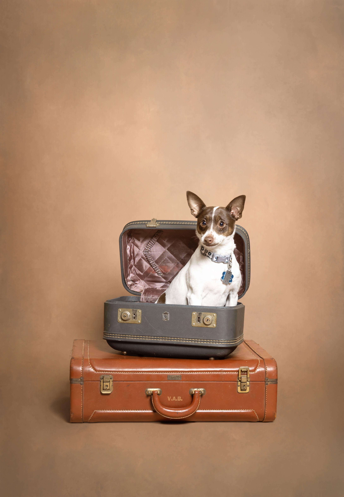

Woof, fellow Philadelphians!
Bandit here, your friendly neighborhood rat terrier with a nose for legal trouble. Today, I'm digging into a topic that affects every four-legged friend and their human companions in the City of Brotherly Love: dog owner liability and leash laws.
The State of the Law (and the State of My Walks)
Pennsylvania operates under a "strict liability" statute when it comes to dog bites. What does this mean for your human? Under 3 Pa.C.S. § 459-502, if I (hypothetically, of course—I'm a good boy) were to bite someone, my owner would be liable for medical costs regardless of whether they were negligent. That's right—no "one free bite" rule here in the Keystone State.
But here's where it gets interesting: for damages beyond medical costs—pain and suffering, lost wages, that artisanal small-batch treat collection—the injured party must prove either:
- Negligence, or
- That I had "dangerous propensities" my owner knew about
As a 12-pound rat terrier, I'd like to think my "dangerous propensities" are limited to aggressively pursuing squeaky toys.
Philadelphia's Specific Ordinances
The Philadelphia Code § 10-104 requires that dogs be under control at all times in public spaces. This means:
- Leashed (maximum 6 feet in most public areas)
- Or under "immediate voice control" in designated off-leash areas
The ESA Debate: Pets, Housing, and Fair Access
I've been following an interesting trend in Philadelphia Housing Court: disputes over "no pets" clauses versus emotional support animals. While I'm too busy chasing rats to need emotional support, the intersection of the Fair Housing Act and local ordinances creates fascinating questions about reasonable accommodations.
Landlords in Philadelphia cannot blanket-refuse tenants with legitimate ESA documentation, but the burden of proof and documentation requirements continue to shift. Keep your noses—and paperwork—in order.
Sidewalk Liability: Who's Responsible When I Trip You?
Here's something my human learned the hard way: in Philadelphia, property owners are responsible for maintaining sidewalks adjacent to their property (Philadelphia Code § 10-721). If my leash causes someone to trip on a broken sidewalk square, the liability analysis gets complex—was it the leash, the sidewalk, or my irresistible urge to chase that squirrel?
Philadelphia's notoriously uneven sidewalks—buckled by old tree roots and decades of freeze-thaw cycles—make this an especially active area of personal injury litigation. If you're a property owner, keep those walkways level. If you're a dog, keep your human attentive.

Tail-End Thoughts
The intersection of municipal ordinances, state statutes, and common law liability makes Philadelphia dog ownership a surprisingly complex legal landscape. My advice? Keep current on rabies vaccinations, maintain adequate homeowner's insurance, and for the love of liver treats, pick up after your dog. That last one's just good citizenship.
Until next time, keep your nose clean and your legal affairs cleaner.
Bark regards,
Bandit 🐾